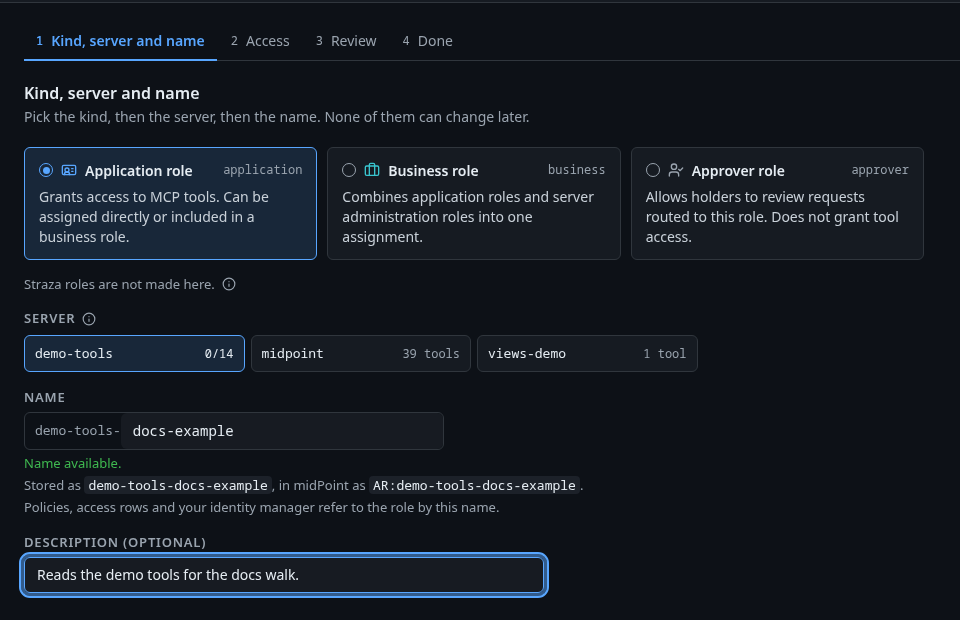
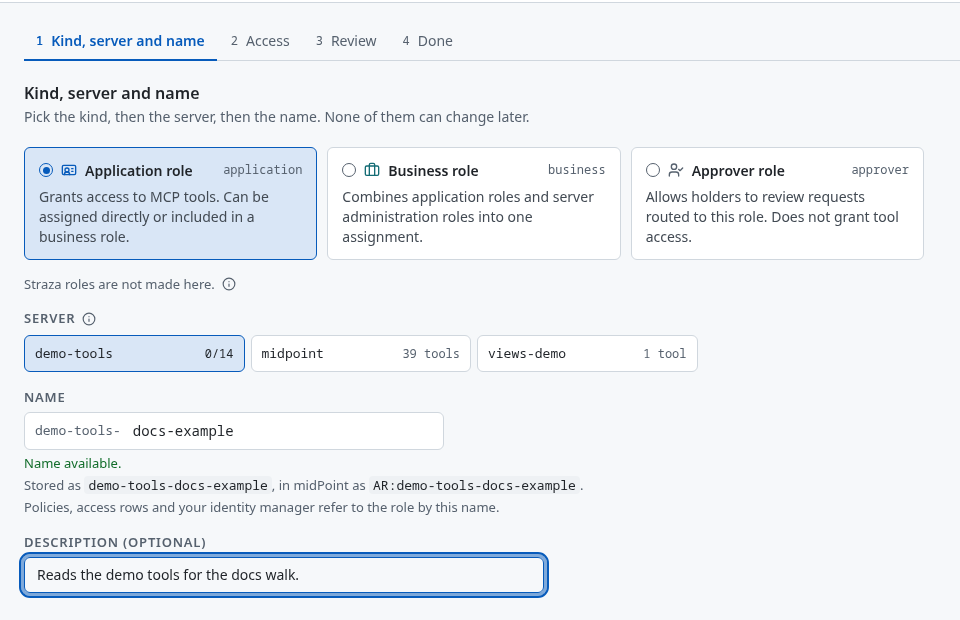

Your demo stack is running
Straza decides every tool call an AI agent makes. It allows the call, denies it with a reason, or holds it until a person says yes, and it records each decision in a hash-chained audit trail.
This stack runs Straza with midPoint as the identity manager, Keycloak for sign-in, three MCP servers, and sam, an AI agent that works on its own. midPoint created the people and agents you will meet and provisioned them into Straza over SCIM.
Start as alice in the console. Then pick a walkthrough below. The quickest is See an agent's rm -rf denied: sam already tried rm -rf here, and Straza refused it.
On a first start the seeder may still be at work. Its log says EVAL STACK READY once the people, agents and roles are in place.
docker compose -p straza-eval logs -f eval-seedStart in the console
http://localhost:8420/console/
Sign inPress Sign in with a code, then Open the sign-in page
Useralice
Passwordalice
Use localhost, not 127.0.0.1. Keycloak ties its sign-in cookie to that name.
Walkthroughs
Each one says who you act as, what it needs and what you will see. Open one for its steps.
Look around as aliceShow stepsHide steps
- Sign in to the console as alice.
- Open Overview. It shows the deployment's health and recent activity, and it re-hashes up to 25 of the latest audit records in your browser to check the chain.
- Open Users, MCP servers and Audit.
midPoint made alice an admin through the business role BR:Straza-admin-access, an assignment an access review can certify. She also sponsors joe and sam, so their held calls come to her.
Give a role access to demo-toolsShow stepsHide steps
- In the console open Roles, press New role and pick Application role.
- Pick the server demo-tools and type the rest of the name after its
demo-tools-prefix. The console shows the name the role will have here and in midPoint. - Press Next, tick
echoandget-sum, press Next again, then Save and publish.


Those tools now run for whoever holds the role, unless a policy gates them. The guide is Access per role.
From a terminal with strazactl instead, sign in, then create the role:
strazactl login --server http://localhost:8420strazactl roles create demo-tools-sandbox-readers --app demo-tools --tools echo,get-sumSee an agent's rm -rf deniedShow stepsHide steps
- In the console open Policies, then agent-guardrails. Its rule
no-rm-rfdeniesrm -rfand two other destructive commands, each with a reason. - Open Audit and set the effect filter to deny. sam ran
rm -rf /tmp/probewhen it started, to prove the rule holds. Its record carries the reasonStraza: destructive command denied by the agent guardrails. - To write a deny of your own, follow Your first deny. It needs a role, a person who holds it and a machine enrolled as that person.
Pull the kill switch from midPointShow stepsHide steps
- Sign in to midPoint at localhost:8087/midpoint as
administratorwith the passwordStrazaEval5ecr3t!. - Open Users, then sam-sre-agent, and disable it.
- sam makes a governed call every 10 minutes. Straza refuses the first one after the disable, and seconds later this command shows sam's container as unhealthy:
docker compose -p straza-eval ps agent-sam - Enable sam again. It enrolls again on its own, and its old sessions stay revoked.
sam's log names each refused call:
docker compose -p straza-eval logs -f agent-samOne change in the identity manager stops a working agent everywhere. The guide is Kill-switch runbook.
Decide an agent's deploy ticketShow stepsHide steps
- Have sam try a deploy:
The deploy does not run. A ticket waits for sam's sponsor, alice, and for the holders of sec-approvers, alice and ivan. Whoever answers first decides.
docker exec straza-sam sh /opt/sam/raise-ticket.sh - As alice, open Approvals in the console and approve the request. ivan can approve it on the self-service page instead, once he signs in and enables his browser under This browser.
- Run the command again within the hour. The deploy runs once, and the run after it raises a new ticket.
sam works on its own, so it can never approve its own request. The guide is Tickets.
Hold an agent's call for a personShow stepsHide steps
This needs joe, who runs in the straza-harness container of the demo overlay, compose.demo.yaml. That overlay also builds the chat demo from the straza-agents-demo repository, which is not public.
- Ask joe to add 2 and 3 with demo-tools. Straza holds the call to
get-sumfor up to 2 minutes. - The hold goes to joe's sponsor, alice. Decide it in the console under Approvals, or on her phone or enabled browser.
- joe's retry with the same numbers runs. A different sum is a new hold.
Without the demo overlay, Decide an agent's deploy ticket gives you a request of sam's to decide on this stack. The guide is Hold a call for a person.
Delegate one serverShow stepsHide steps
Open the console in a private browser window for each person, so Keycloak asks for their password instead of reusing alice's sign-in.
- Sign in to the console as carol. midPoint gave her the admin role of demo-tools and nothing more.
- Open MCP servers. The list holds demo-tools alone, and carol may change it. Removing it stays with a global admin.
- Sign in as dave, who administers every MCP server, and compare.
The guide is Delegate one MCP server.
Watch an AI agent arrive from midPointShow stepsHide steps
- In midPoint, open Users, then nina-data-analyst-agent.
- Assign her the role BR:Straza-analyst-access and save.
- In the Straza console, open Users. nina-data-analyst-agent is there with the analyst role, which composes demo-tools-readers and midpoint-self-service.
nina gets no Keycloak login, because the access package gives one to people only. The guide is AI agents as identities.
Ask midPoint for a role through an agentShow stepsHide steps
This needs an MCP client connected to Straza's gateway as alice, as Any MCP client shows, and a phone or browser enrolled to alice.
- On the self-service page, open Credentials and press Sign in with keycloak on the midpoint row. midPoint's tools then run as you.
- Ask your agent to call midPoint's
whoami. It answers as alice. - Ask it to list the requestable roles and request BR:Straza-developer-access. Straza holds the request until you confirm it on your own phone or enabled browser.
- Open Audit. The request and your decision are both there.
The guide is midPoint.
Pair a real phoneShow stepsHide steps
Start the stack with up.sh, or up.ps1 on Windows, so the QR code carries an address your phone can reach on port 8443.
- Install the Straza Approver app from the App Store or Google Play.
- Open self-service as alice, open the This browser tab and press Add a phone. alice already holds the role that lets a person add their own phone, so nobody needs to assign it.
- Scan the QR code with the app.
- Straza sends alice's next request to the phone as a notification. Tap it to decide.
An admin can add a phone for any person in the console, under Approvals, then Approver devices. The guide is Approve on a phone.
Accounts
These are lab accounts. Their passwords are committed to the repository.
| Who | Their part in the story | Signs in at | User | Password |
|---|---|---|---|---|
| alice | An admin, made one by midPoint. She sponsors joe and sam, so their held calls come to her. | Console, self-service | ||
| ivan | Decides approvals through the sec-approvers role. He reaches no MCP tools. | Self-service | ||
| carol | Administers the demo-tools server and nothing else. | Console | ||
| dave | Administers every MCP server. | Console | ||
| grace | An employee who exists only in midPoint. She holds no role, so Straza has no account for her. | Nowhere in this demo | grace | not used |
| sam | An SRE agent that runs all the time on its own, sponsored by alice. | No sign-in. It uses its own key. | sam-sre-agent | none |
| joe | A supervised Java developer agent, sponsored by alice. Runs only with the demo overlay. | Chat demo | ||
| nina | An analyst agent that reaches Straza only after midPoint assigns her the analyst role. | No sign-in | nina-data-analyst-agent | none |
| midPoint admin | Runs the identity manager. | midPoint | ||
| Keycloak admin | Runs Keycloak, whose realm straza signs everyone in. | Keycloak | ||
| Kibana | Reads the audit events. Needs the SIEM overlay. | Kibana |
Services
| Service | Address | What it is | Runs with |
|---|---|---|---|
| Straza console | localhost:8420/console/ | Users, roles, MCP servers, policies, approvals and audit | always |
| Self-service | localhost:8420/self-service/ | Your approval requests, server credentials and approval devices | always |
| Docs | localhost:8400/docs/ | The Straza documentation, built from this checkout when the stack starts | always |
| midPoint | localhost:8087/midpoint | The identity manager | always |
| Keycloak | localhost:8480 | The sign-in provider | always |
| Phone approver | https://<your address>:8443 | Where a paired phone decides. The QR code carries the address and the certificate pin. | always |
| Kibana, Elasticsearch | localhost:5601, 127.0.0.1:9200 | Search and alerts over the audit events | the SIEM overlay, compose.siem.yaml |
| Chat demo | localhost:8477 | joe's chat window | the demo overlay, compose.demo.yaml, which builds from a private repository |
| demo-tools, views-demo, midPoint MCP | no address | MCP servers, reached only through Straza's gateway. midPoint's tools run as the person signed in. | always |
An overlay is an extra compose file you start together with the stack. The demo stack page shows the commands, and how to reach a stack on another machine over SSH.
Lab shortcuts in this stack
These make the demo quick. None of them is how you run Straza for real.
- Every password on this page is committed to the repository. So are the Postgres logins
strazaandmidpoint, each with its own name as the password, the midPoint service account, the seed-bootstrap account the seeder disables when it is done, the Keycloak client secret, the Kibana system password and the three Kibana encryption keys. - Plain HTTP everywhere except the phone approver on port 8443, whose certificate strazad makes itself. TLS and exposure covers a real deployment.
- The ports 8400, 8420, 8443, 8480 and 8087 listen on every interface, and Docker's rules run before a host firewall. The loopback overlay,
compose.loopback.yaml, keeps them on this machine. - Attestation is relaxed, so any install of the client gets a session.
- Keycloak lets the seeder and the chat demo sign in with a password, and midPoint's Keycloak connector signs in as Keycloak's master admin.
- The push relay is on, and ntfy.sh and the browser push services are allowed as push targets. A push carries a reference to the request, never its content.
A production layout is on The enterprise shape.